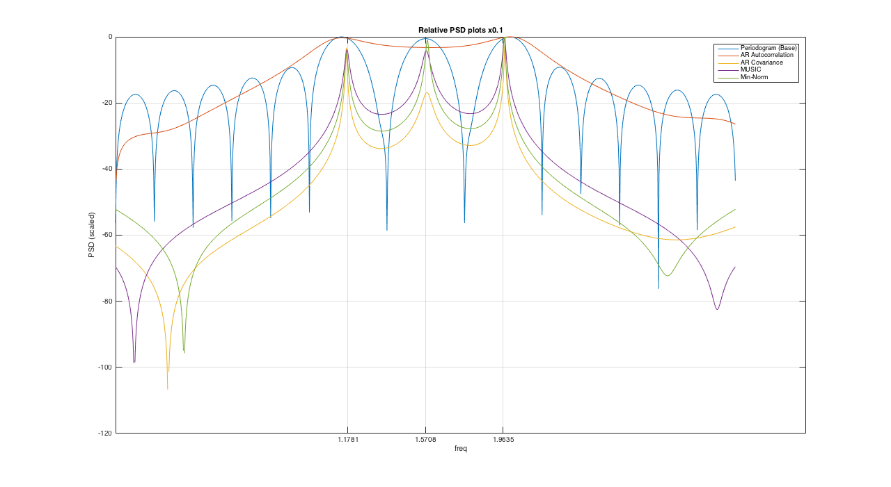

EE779 : Advanced Topics in Signal Processing
Contents
- Question 1 : AR1 and AR2 estimates of S01.DAT
- Reading the data files for Ques 1
- 1. a,b) Calculating parameters for AR2 process
- 1. c) Estimating the process using AR2 parameters
- 1. d) Calculating parameters for AR1 process
- 1. e) Power Spectrum estimate for AR1
- 1. f) Power Spectrum estimate for AR2
- 1. g) Comparision with Periodogram estimate
- Question 2 Complex Signal with additive scaled noise
- Reading the data files for Ques 2
- 2. a) Periodogram for K=0.01
- 2. b) i) Autocorrelation method
- 2. b) ii) Covariance method
- 2. b) iii) MUSIC method
- 2. b) iv) Min-Norm Method
- All Plots for Ques 2
Question 1 : AR1 and AR2 estimates of S01.DAT
Please refer to relevant comments throughout the file
Navjot Singh (130110071)
close all clear all
Reading the data files for Ques 1
S01 = getdata('./assgn3_data/S01.DAT');
1. a,b) Calculating parameters for AR2 process
[Rx_AR2,a_AR2,err_AR2]=AR_Autocorr_param(S01,2); Rx_AR2 err_AR2 a_AR2
Rx_AR2 =
7.8935 7.3366 6.8760
7.3366 7.8935 7.3366
6.8760 7.3366 7.8935
err_AR2 =
1.0714
a_AR2 =
1.0000
-0.8802
-0.0530
1. c) Estimating the process using AR2 parameters
We assume the signal valeus to be 0 for n<0.
S01_AR2 = -1*(a_AR2(2)*[0 S01(1:end-1)] + a_AR2(3)*[0 0 S01(1:end-2)]); err_sig_AR2 = S01 - S01_AR2; err_AR2 - var(err_sig_AR2); fig = figure; plot(err_sig_AR2); title('Error Signal AR2'); xlabel('index'); ylabel('value'); set(gcf, 'Position', get(0, 'Screensize')); saveas(fig,'./results/Q1/err_sig_AR2.jpg','jpg'); var_err_sig_AR2=var(err_sig_AR2)
var_err_sig_AR2 =
1.0684
The variance of this error signal is near to the predicted variance by the variance returned by the function. The percentage change is equal to : (var(err_sig_AR2)-err_AR2)/err_AR2)*100 = -0.279%
1. d) Calculating parameters for AR1 process
function [Rx,a,err] = AR_Autocorr_param(data,p) rx = findAutocorr(data); [X,Rx] = corrmtx(data,p,'autocorrelation'); Rx_part = Rx(2:end,2:end); b = -1*rx(2:p+1).'; a_p = (Rx_part)\b; a = [1;a_p]; c = Rx*a; err = c(1);
[Rx_AR1,a_AR1,err_AR1]=AR_Autocorr_param(S01,1); Rx_AR1 err_AR1 a_AR1 S01_AR1 = -1*(a_AR1(2)*[0 S01(1:end-1)]); err_sig_AR1 = S01 - S01_AR1; fig = figure; plot(err_sig_AR1); title('Error Signal AR1'); xlabel('index'); ylabel('value'); set(gcf, 'Position', get(0, 'Screensize')); saveas(fig,'./results/Q1/err_sig_AR1.jpg','jpg'); var_err_sig_AR1=var(err_sig_AR1)
Rx_AR1 =
7.8935 7.3366
7.3366 7.8935
err_AR1 =
1.0744
a_AR1 =
1.0000
-0.9295
var_err_sig_AR1 =
1.0714
It is found that prediction error variance for first order (err_AR1 = 1.0744) is more than that of second order (err_AR2 = 1.0714) calculated in part(a). The difference between predicted and calculated value of variance is same for both the process. (equal to 0.0030)
1. e) Power Spectrum estimate for AR1
[AR1_PSD,freq]= find_AR_PSD(1,a_AR1); AR1_PSD=AR1_PSD'; freq = linspace(-pi,pi,2048); AR1_PSD=[fliplr(AR1_PSD),AR1_PSD]; fig = figure; plot(freq,10*log10(AR1_PSD)); title('AR1 process PSD'); xlabel('freq'); ylabel('PSD (dB)'); set(gcf, 'Position', get(0, 'Screensize')); saveas(fig,'./results/Q1/AR1_PSD.jpg','jpg');
1. f) Power Spectrum estimate for AR2
[AR2_PSD,freq]= find_AR_PSD(1,a_AR2); freq = linspace(-pi,pi,2048); AR2_PSD=AR2_PSD'; AR2_PSD=[fliplr(AR2_PSD),AR2_PSD]; fig = figure; plot(freq,10*log10(AR2_PSD)); title('AR2 process PSD'); xlabel('freq'); ylabel('PSD (dB)'); set(gcf, 'Position', get(0, 'Screensize')); saveas(fig,'./results/Q1/AR2_PSD.jpg','jpg');
1. g) Comparision with Periodogram estimate
Shown is the Periodogram estimate (as asked in the question: best, N=512 ) and Blackman-Tukey (best) for S01.DAT. Provided the actual PSD of S01.DAT in assignment 1, we can see that AR models are better able to model them than compared to non-parametric methods like Periodogram/ Blackman-Tukey.
% Periodogram estimate fft_len=1024; freq = linspace(-pi,pi,fft_len); N= 512; x=S01(1:N); a=fftshift(fft(x,fft_len)); a=((abs(a)).^2)./N; per_PSD_512=a; fig = figure; plot(freq,10*log(per_PSD_512)) ; title('Periodogram Method (N = 512)'); xlabel('Normalized frequency'); ylabel('PSD (db)'); saveas(fig,'./results/Q1/per_PSD_512.jpg','jpg'); % Blackman- Tukey estimate (best) N = 512; fft_len=1024; rx = findAutocorr(S01); % calling function to return autocovariance seq freq = linspace(-pi,pi,fft_len); M=32; r=[fliplr(rx(1:M)),rx(2:M)]; % reproducing a symmetric autocov seq w=bartlett(2*M-1); a=r.*w'; blacktukey_PSD_32=abs(fftshift(fft(a,fft_len))); fig = figure; plot(freq,10*log(blacktukey_PSD_32)); title('Blackman Tukey Method (M = 32)'); xlabel('Normalized frequency'); ylabel('PSD (dB)') saveas(fig,'./results/Q1/blacktukey_PSD_32.jpg','jpg');
Question 2 Complex Signal with additive scaled noise
Reading the data files for Ques 2
S01 = getdata('./assgn3_data/S01.DAT'); R01 = getdata('./assgn3_data/R01.DAT'); I01 = getdata('./assgn3_data/I01.DAT'); R10 = getdata('./assgn3_data/R10.DAT'); I10 = getdata('./assgn3_data/I10.DAT'); R40 = getdata('./assgn3_data/R40.DAT'); I40 = getdata('./assgn3_data/I40.DAT'); fft_len = 2048; % Assembling the complex values signals and findAutocorr function % definition x01 = R01 + 1i*I01; x10 = R10 + 1i*I10; x40 = R40 + 1i*I40; k_list = [0.01,0.10,0.40]; x_list = [x01.',x10.',x40.'];
% Using Biased estimate for finding Autocovariance sequence function [r]= findAutocov (x) r=zeros(1,size(x,2)); for i=1:size(x,2) for j=i:size(x,2); r(i)=r(i)+(x(j)*conj(x(j-i+1))); end %r(i) = r(i)/(size(x,2)-i-1); end r= r/size(x,2);
As asked in the question, all plots are provided from 0 to pi. There are comments in different files to change this range from -pi to pi.
2. a) Periodogram for K=0.01
temp = fftshift(fft(x01,fft_len)); x01_periodogram_PSD = abs(temp).^2; x01_periodogram_PSD = x01_periodogram_PSD / size(x01,2); freq= 0:(2*pi/fft_len):pi; freq=freq(1:end-1); fig = figure; plot(freq,10*log10(x01_periodogram_PSD((fft_len/2)+1:end))); title('X01 periodogram PSD'); xlabel('freq'); ylabel('PSD (dB)'); set(gcf, 'Position', get(0, 'Screensize')); grid on sig=[3*pi/8 pi/2 5*pi/8]; set(gca,'xtick',sig); saveas(fig,'./results/Q2/x01_periodogram_PSD.jpg','jpg');
2. b) i) Autocorrelation method
function [Rx,a,err] = AR_Autocorr_param(data,p) rx = findAutocorr(data); [X,Rx] = corrmtx(data,p,'autocorrelation'); Rx_part = Rx(2:end,2:end); b = -1*rx(2:p+1).'; a_p = (Rx_part)\b; a = [1;a_p]; c = Rx*a; err = c(1);
function[AR_PSD,freq] = find_AR_PSD(b,a) %[AR_PSD,freq] = freqz(b,a,'whole',1024); [AR_PSD,freq] = freqz(b,a,'whole',2048); AR_PSD = fftshift(AR_PSD); AR_PSD = abs(AR_PSD).^2; %AR_PSD = AR_PSD(513:1024); AR_PSD = AR_PSD(1025:2048); freq = freq-pi; freq = freq(1025:2048);
We can see that the Autocorrealtion method is not able to seperate between closely spaced peaks and hence, peaks at only two values.
for k = 1:length(k_list) x = x_list(:,k).'; [Rx_AR7,a_AR7,err_AR7]=AR_Autocorr_param(x,7); [AR7_PSD,freq]= find_AR_PSD(1,a_AR7); fig = figure; plot(freq,10*log10(AR7_PSD)); title(['X',num2str(k_list(k)),'Autocorrelation PSD']); xlabel('freq'); ylabel('PSD (dB)'); set(gcf, 'Position', get(0, 'Screensize')); grid on sig=[3*pi/8 pi/2 5*pi/8]; set(gca,'xtick',sig); saveas(fig,['./results/Q2/AR7_PSD_x',num2str(100*k_list(k))],'jpg'); end
2. b) ii) Covariance method
function [AR_cov_PSD,freq] = find_AR_Covar_PSD(x,p,K) [X,Rxx_covar] = corrmtx(x,p,'covariance'); Rxx_covar_part = Rxx_covar(2:length(Rxx_covar),2:length(Rxx_covar)); b = -Rxx_covar(2:end,1); a_covar = inv(Rxx_covar_part)*b; a = [1;a_covar]; c = Rxx_covar*a; error_cov = c(1); %[h,w] = freqz(1,a,'whole',1024); [h,w] = freqz(1,a,'whole',2048); AR_cov_PSD = abs(fftshift(h)).^2; %AR_cov_PSD = AR_cov_PSD(513:1024); AR_cov_PSD = AR_cov_PSD(1025:2048); freq = w - pi; %freq = freq(513:1024); freq = freq(1025:2048); end
for k = 1:length(k_list) x = x_list(:,k).'; [AR7_cov_PSD,freq]= find_AR_Covar_PSD(x,7,k_list(k)); fig = figure; plot(freq,10*log10(AR7_cov_PSD)); title(['X',num2str(k_list(k)),'Covariance PSD']); xlabel('freq'); ylabel('PSD (dB)'); set(gcf, 'Position', get(0, 'Screensize')); grid on sig=[3*pi/8 pi/2 5*pi/8]; set(gca,'xtick',sig); saveas(fig,['./results/Q2/AR7_cov_PSD_x',num2str(100*k_list(k))],'jpg'); end
2. b) iii) MUSIC method
function [MUSIC_psd,freq] = find_MUSIC_PSD(x,M,P) [X,Rxx_covar] = corrmtx(x,M-1,'covariance'); M = length(Rxx_covar(:,1)); [V,lambda] = eig(Rxx_covar); %spectrum_len = 512; spectrum_len = 1024; freq = linspace(0,pi,spectrum_len); sum_denom = zeros(1,spectrum_len); for j = 1:length(freq) w = freq(j); sum_temp = 0; for i = 1:M-P v_i = V(:,i); temp = 0; for k = 1:M temp = temp + (exp(-1i*(k-1)*w))*v_i(k); end sum_temp = sum_temp + (abs(temp))^2; end sum_denom(j) = sum_temp; end MUSIC_psd = 1./sum_denom; MUSIC_psd = MUSIC_psd'; end
for k = 1:length(k_list) x = x_list(:,k).'; [MUSIC_M8_PSD,freq] = find_MUSIC_PSD(x,8,3); fig = figure; plot(freq,10*log10(MUSIC_M8_PSD)); title(['X',num2str(k_list(k)),'MUSIC PSD']); xlabel('freq'); ylabel('PSD (dB)'); set(gcf, 'Position', get(0, 'Screensize')); grid on sig=[3*pi/8 pi/2 5*pi/8]; set(gca,'xtick',sig); saveas(fig,['./results/Q2/MUSIC_M8_PSD_x',num2str(100*k_list(k))],'jpg'); end
2. b) iv) Min-Norm Method
function [minimum_norm_psd,freq] = find_minnorm_PSD(x,M,P) [X,Rxx_covar] = corrmtx(x,M-1,'covariance'); M = length(Rxx_covar(:,1)); [V,lambda] = eig(Rxx_covar); V_noise = V(:,1:M-P); % Calculating vector a u = zeros(1,M)'; u(1) = 1; num = (V_noise*V_noise')*u; den = u'*(V_noise*V_noise')*u; a = num./den; %spectrum_len = 512; spectrum_len = 1024; freq = linspace(0,pi,spectrum_len); sum_denom = zeros(1,spectrum_len); for j = 1:length(freq) w = freq(j); sum_temp = 0; for k = 1:M sum_temp = sum_temp + (exp(-1i*(k-1)*w))*a(k); end sum_denom(j) = (abs(sum_temp))^2; end minimum_norm_psd = 1./sum_denom; minimum_norm_psd = minimum_norm_psd'; end
for k = 1:length(k_list) x = x_list(:,k).'; [MinNorm_M8_PSD,freq] = find_minnorm_PSD(x,8,3); fig = figure; plot(freq,10*log10(MinNorm_M8_PSD)); title(['X',num2str(k_list(k)),'Min-Norm PSD']); xlabel('freq'); ylabel('PSD (dB)'); set(gcf, 'Position', get(0, 'Screensize')); grid on sig=[3*pi/8 pi/2 5*pi/8]; set(gca,'xtick',sig); saveas(fig,['./results/Q2/MinNorm_M8_PSD_x',num2str(100*k_list(k))],'jpg'); end
All Plots for Ques 2
for k = 1:length(k_list) x = x_list(:,k).'; [Rx_AR7,a_AR7,err_AR7]=AR_Autocorr_param(x,7); [AR7_PSD,freq]= find_AR_PSD(1,a_AR7); [AR7_cov_PSD,freq]= find_AR_Covar_PSD(x,7,1); [MUSIC_M8_PSD,freq] = find_MUSIC_PSD(x,8,3); [MinNorm_M8_PSD,freq] = find_minnorm_PSD(x,8,3); x01_periodogram_PSD= (x01_periodogram_PSD-min(x01_periodogram_PSD))./(max(x01_periodogram_PSD)-min(x01_periodogram_PSD)); AR7_PSD= (AR7_PSD-min(AR7_PSD))./(max(AR7_PSD)-min(AR7_PSD)); AR7_cov_PSD= (AR7_cov_PSD-min(AR7_cov_PSD))./(max(AR7_cov_PSD)-min(AR7_cov_PSD)); MUSIC_M8_PSD= (MUSIC_M8_PSD-min(MUSIC_M8_PSD))./(max(MUSIC_M8_PSD)-min(MUSIC_M8_PSD)); MinNorm_M8_PSD= (MinNorm_M8_PSD-min(MinNorm_M8_PSD))./(max(MinNorm_M8_PSD)-min(MinNorm_M8_PSD)); all_plots = 10*log10([x01_periodogram_PSD(1025:2048)',AR7_PSD,AR7_cov_PSD,MUSIC_M8_PSD,MinNorm_M8_PSD]); fig = figure; plot(freq,all_plots); title(['Relative PSD plots x',num2str(k_list(k))]); xlabel('freq'); ylabel('PSD (scaled)'); lgnd = legend('Periodogram (Base)','AR Autocorrelation','AR Covariance','MUSIC','Min-Norm'); set(gcf, 'Position', get(0, 'Screensize')); grid on sig=[3*pi/8 pi/2 5*pi/8]; set(gca,'xtick',sig); saveas(fig,['./results/Q2/','relative_PSD_x',num2str(100*k_list(k))],'jpg'); end
- We see that the performance of methods deteriorates with increasing values of K which is expected.
- It is also observed that the MUSIC and Min-norm are better able to model the peaks as can be seen from their plotted pseudo-spectrums.
- The Autocorrealtion method is not able to model 3 peaks, but only two peaks are seen in the PSD plots.
K=0.01
All method except Autocorrealtion method are able to model the peaks.
K=0.10
Covariance method is only able to model one two peaks. MUSIC and Min-norm method are able to model the side peaks.
K=0.40
Only a single peak is modelled by all methods. In case of Min-norm this is the centre peak, while for others it is the peak at 5pi/8.